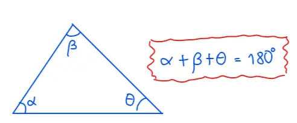
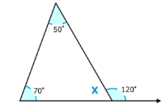

Propiedades Básicas de los triángulos.
Ángulos Internos de un Triángulo.
TEOREMA : Los ángulos internos de un triángulo suman 180°

Demostración geométrica:
Consideremos un triángulo cualquiera △ABC\triangle ABC△ABC.
Traza una línea paralela al lado BCBCBC que pase por el vértice AAA. Según la geometría euclidiana, los ángulos alternos internos formados por la transversal son iguales a los ángulos del triángulo.
Los ángulos α,β\alpha, \betaα,β, y γ\gammaγ se reubican en una línea recta, que mide 180∘180^\circ 180∘.
Ejemplos:
Como puedes ver, el ángulo interior y el ángulo exterior forman una recta. Por lo tanto la suma se esos ángulos debe ser 180°

El ángulo adyacente al ángulo interior es 120∘ . Si el ángulo exterior e interior forman una línea recta, entonces deben sumar 180∘ . Podemos escribir una ecuación y resolver para la medida de x .
120° + x = 180°
x = 180° - 120°
x = 60°
¿Cuánto mide el ángulo S de la siguiente figura?

El ángulo S es un ángulo exterior. Sin embargo, no sabemos la medida de su ángulo adyacente. ¿Cómo podemos encontrar la medida del ángulo S ? Si podemos. La sume de los otros dos ángulos interiores es igual a la medida del ángulo exterior adyacente al tercer ángulo interior. Por lo que el ángulo S debe ser igual a la suma de los ángulos dados.
S = 30 + 35
S = 65°
También podemos encontrar la medida del tercer ángulo del triángulo usando el ángulo adyacente exterior. Sabemos que suma del ángulo interior y el ángulo S es 180∘ . Si S mide 65∘ , el ángulo interior debe medir 180−65=115∘ .
Sabemos que la suma de los ángulos interiores de un triángulo es 180∘ , por lo que podemos encontrar la medida faltante al sumar los dos ángulos y restando el resultado de 180∘ .

Ángulos Externos de un Triángulo
TEOREMA: Los ángulos externos de un triángulo suman 360°

Ejemplos: